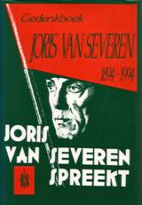
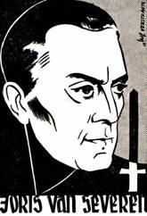

> nieuwsbrief > 2013 - nr 1
Inhoud
Hernieuwen
ledenbijdrage voor 2013
Hoewel
we,
zoals elk jaar overigens, straks weer geconfronteerd zullen worden met
de
uiteraard weer eens naar boven aangepaste posttarieven, blijft uw
ledenbijdrage voor 2013 ongewijzigd. Ze beloopt voor het in mei te
verschijnen
nieuwe Jaarboek Joris van Severen en
voor de driemaandelijkse Nieuwsbrief
Joris van Severen 29 . Vanaf 35 wordt u met dank als steunend
lid
geboekt. Ons rekeningnummer: IBAN BE71 0001 7058 1469 BIC
BPOTBEB1
t.n.v. Studiecentrum Joris van Severen, 890 Ieper. De
penningmeester hoopt op een vlot verloop van het hernieuwen van de
ledenbijdragen.
Voor tal
van
geadresseerden vormt deze Nieuwsbrief wellicht
een eerste kennismaking met het Studiecentrum Joris van Severen en zijn
werking. We verhopen, mede met het oog op onze verdere plannen zoals
de voor
2014 geplande prestige-uitgave van de grote fotobiografie over Joris
van
Severen en zijn beweging hun belangstelling te kunnen opwekken.
Jaarboek
Joris van Severen 17 (2013)
In mei aanstaande verschijn het inderdaad al 17e nieuwe Jaarboek Joris van Severen. Zonder in detail op de inhoud vooruit te lopen kunnen we nu al wel verzekeren dat het eens te meer een boeiend jaarboek wordt, dank zij de inbreng van o.m. Romain Vanlandschoot. Ook van Joris van Severen zelf brengen we andermaal een uitgebreid dagboekfragment.
Waardevolle
gift
Jef van den Bosch uit
Dilbeek
schonk aan ons Studiecentrum een prachtig glas-in-loodraam,
voorstellende het
Dinaso-embleem met ploeg, rad en zwaard en de DMO-leuze Recht
en trouw.
Fotobiografie
Joris van Severen en het Verdinaso
Voor het jaar 2014
plannen wij
andermaal een jaarboek buitenreeks.
In onze Nieuwsbrief zullen we regelmatig op dit grootse project terugkomen, teneinde u tijdig te informeren over de stand van zaken. Deze publicatie buiten reeks, zal tevens als ons jaarboek voor 2014 fungeren.
Herdenkingen
in 2013
Ook in 2013 zullen de
herdenkingsplechtigheid aan het Bourgoensche Cruyce in de Wollestraat
te Brugge
en de jaarmis voor Joris van Severen en zijn lotgenoten binnen het Slot
van
Male in elkaars verlengde doorgaan op zaterdag 18 mei. Op zondag 19 mei
wordt
dan verzamelen geblazen aan het graf van Joris van Severen en
Laatste
exemplaren Gedenkboek Joris van Severen
Via onze vorige Nieuwsbrief brachten
we de laatste exemplaren van dit
prestigieuze 352 paginas tellende ingebonden gedenkboek dat in 1994
verscheen n.a.v. de 100e geboortedag van Joris van Severen op de
markt.
Over Groot-
versus Heel-Nederlands
In Kort
Manifest, het tijdschrift van het Vormingsinstituut Wies
Moens, kunnen we elk jaar een uitgebreide recensie lezen over ons Jaarboek Joris van Severen. Zo ook in het
nummer 197 (augustus-september 2012) over het zestiende jaarboek. Als
Groot-Nederlander, in de lijn van Wies Moens, stoort
Over de ene rits bezwaren de levenswandel kunnen we kort zijn: die blijkt genoegzaam uit onze publicatie van de integrale dagboekteksten van Joris van Severen. Wie er op volwassen wijze kennis van neemt ontmoet een zoekende geest die het banale verwerpt en hogere waarden nastreeft, zij het met vallen en opstaan dat des mensens is.
Blijft voor iemand die de onmiskenbare verdiensten van een Wies Moens hoog in het vaandel draagt niet verwonderlijk de geopolitieke bezwaren tegen Van Severens beeld van de Nederlanden.
Kort Manifest pleit voor de hereniging van Vlaanderen en Noord-Nederland. Een eenheid die er als dusdanig nooit is geweest. Beter zou men het dus hebben over een mogelijke vereniging van deze twee onder vele territoria die tot de Nederlanden behoren.
Van Severens kijk op de Nederlanden was meerzijdiger en berustte op een ruimer historisch bewustzijn over het verleden van de Lage Landen. De groei van dit historisch besef kwam er niet op één dag: ook hij kende de evolutie van flamingant naar Groot-Nederlander, vooraleer het Heel-Nederlands perspectief te belijden (en Wies Moens als medestander te verliezen).
De Nederlandse
historicus
Als historicus zie ik de Nederlanden als een steeds nauwer begrensd gebied, dat steeds moeilijker tot één der buurstaten kan behoren. Op dat gebied vind ik van oudsher de Walen. Ik kan ze daarom niet anders dan, zoals onze voorvaders, als Waalse Nederlanders beschouwen. En dit brengt mee, dat ik het als onze historische taak zie de binationale samenleving van onze beide naties te verwezenlijken. Natuurlijk onder hegemonie van het Nederlandse element. Zo niet: dan niet door onze schuld; niet doordat wij, oeroud staatsvolk, vervallen in staatsrechterlijk primitivisme.1
Een Heel-Nederlandse thesis, waarmee Gerretson het concept van Pieter Geyls Geschiedenis van de Nederlandse Stam verwierp - dat uitging van de wetenschappelijk niet houdbaar gebleken stelling gebaseerd op de romantische leuze de taal is gans het volk - en die sindsdien, alvast onder historici, gemeengoed geworden is.
Jean-Marie Gantois, de voorman van de Zuid-Vlaamse beweging in de Franse Nederlanden, zou daar aan toevoegen:
De taal der Nederlanden is het Nederlands.
(...) Maar de taal is niet gans het volk (...). De Nederlanden strekken
zich,
over de huidige taalgrens heen, zover uit als het Nederlandse volk
zich
uitstrekt. Wij zijn geen separatisten.2 - Wij
zijn geen Nederlandssprekende Fransen. Wij zijn Nederlanders
(zelfs als wij Picardisch, ja Frans spreken).
Indien men ons
zou vragen de grenzen van de Nederlanden te bepalen, zouden wij het
niet kunnen
of evenmin wensen. Elke begrenzing houdt beperkingen in en sluit andere
zaken
uit. Meer dan een ideale politieke constructie zijn de Lage Landen voor
ons een
idee.
Theo Lefèvre, gewezen Eerste Minister, geen oud-Dinaso, maar respectvol ten overstaan van Joris van Severen, omschreef zijn kijk op de Nederlanden in eenzelfde geest:
We beperken ons tot deze
vier
stemmen, waaronder wellicht een paar die ook op de hoogachting en het
respect
van
_____________
2 Jean-Marie Gantois, Bezinning
bij een verjaardag, Uitg. Zannekin, 1964,
pp. 15-16.
3
Jean-Marie Gantois, a.w . p. 59.

Fl. Cuwart (ps. Theo Vonck) in 60 Vlaamse figuren, 1960.
Hij zag veel te groot, - hij was mager en klein,
naar de geest geen Germaan, maar wel een Latijn.
Steeds scheen hij te leven in een kranige kramp,
dus ook zijn Di-na-so, in utopische kamp.
en dandere leiders: sluwe speculatieven.
Hijzelf was de dupe van zeer vreemde conclusies,
ons volk leeft nu eenmaal van vrijheid en ruzies.
Het laat zich niet strak in uniformen wringen,
het kan Tijl en Lamme in zich nooit verdringen.
Hij greep te ver terug, naar t Boergondisch verleden,
en plaatste de toekomst eindloos vèr van het heden.
Was hij dan een soort van Dietse Don Quichote?
Hij viel bij vergissing, door een misdadig schot.
Joris van Severen verdiende een waardiger lot.
In de loop van de
afgelopen
decennia is daartoe een archief aangelegd rond Joris van Severen en
zijn
bewogen politieke loopbaan, in het bijzonder het Verbond van Dietse
Nationaalsolidaristen (Verdinaso). Dit archief is in 2000 overgedragen
aan de
universiteitsbibliotheek van de Katholieke Universiteit Leuven en werd
aldaar
ondertussen geïnventariseerd door dr.
Op basis van minimaal twee inzendingen zal een commissie binnen het Studiecentrum de prijs al dan niet toekennen aan een scriptie die handelt over de persoon Joris van Severen, het Verdinaso of één van de naoorlogse Nachfolge-bewegingen. De scriptie hoeft niet noodzakelijk een eindscriptie te zijn, maar dient minstens tien A4-paginas bevatten.
Mocht u nog vragen of opmerkingen hebben, aarzel dan niet om contact met ons op te nemen.
Voor de beoordelingscommissie,
Drs. R.A.B. Bruijns
p/a Secretariaat Studiecentrum Joris van Severen
Paddevijverstraat 2, 8900 Ieper
Wim de
Winter
Georges van Severen hij wordt pas na 1918 Joris genoemd - wordt op 19 juli 1894 geboren in het gezin van notaris Edmond van Severen, tevens burgemeester te Wakken, en zijn vrouw Irma van de Male. De opvoeding in het gezin Van Severen gebeurt voornamelijk in het Frans; in die tijd niet abnormaal voor de welgestelde burgerij. Van een anti-Vlaamse ingesteldheid is echter geen sprake: ook het West-Vlaams wordt gebezigd en een goede vriend van vader Van Severen is Hugo Verriest, toenmalig pastoor te Wakken. Zijn internaatsjaren op het franskiljonse Sint-Barbara-college in Gent wakkeren Van Severens Vlaamsgezindheid aan: zijn eerste leermeesters zijn Guido Gezelle en vooral Albrecht Rodenbach. Aan de Gentse universiteit wordt Van Severen - die advocaat wil worden - voorzitter van de Rodenbachvrienden. In 1913 helpt hij mee aan de organisatie van het 'Vijfde Groot-Nederlands Studentencongres', dat doorgaat in Gent.
In 1914 breekt de oorlog
uit, en Van
Severen wordt opgeroepen. Hij houdt niet van de oorlog, maar toch valt
hij bij
het officierenkorps op door zijn dapperheid, zijn houding hij is een
echte gentleman
- en zijn scherp verstand. Zelf wil hij geen officier worden: hij
voelt
zich verbonden met de arme Vlaamse soldaten, die veracht en misprezen
worden
door hun franskiljonse oversten. Maar onder druk van generaal Jacques,
die
officieren nodig heeft, en van zijn Vlaamsgezinde vrienden, die vinden
dat ook
de Vlaamse zaak officieren kan gebruiken, geeft hij toch toe.
Na de oorlog keert Van
Severen
terug naar Gent om zijn rechtenstudies te hernemen. Maar veel studeren
doet hij
niet meer; liever wil hij kunstenaar worden. In 1921 start hij 'Ter Waarheid' op, een
Vlaams-nationalistisch, Groot-Nederlands, Europees en christelijk
georiënteerd
tijdschrift, en wordt hij, als kandidaat voor het Vlaamse Front (of
Frontpartij), verkozen tot volksvertegenwoordiger. Een typische
Vlaams-nationalist is hij niet: zelf altijd gladgeschoren en goed
gekleed een
dandy hekelt hij meermaals de slordige en baardige
flaminganten. Vanaf
1922 ventileert hij zijn uitgesproken meningen in het Vlaams-nationale
weekblad
De West-Vlaming, waarin hij het
steeds meer opneemt voor het katholiek geïnspireerde solidarisme, voor
een
Groot-Nederlandse staat en voor meer tucht in de Vlaamse Beweging.
In 1929 wordt hij niet
herkozen. De
onenigheid met de andere Vlaams-nationalisten mondt in 1931 uit in de
oprichting van het Verdinaso (Verbond van Dietse
Nationaalsolidaristen).
In 1934 gooit Van Severen plots het roer om met een 'nieuwe marsrichting': voortaan beschouwt hij het Walenland als een deel van de Nederlanden, dit omwille van historische redenen en omdat hij vindt dat de Walen eigenlijk 'geromaniseerde Franken' zijn. In de loop der jaren zal binnen het Verdinaso het 'Dietse Rijk' wel eens van naam veranderen en o.a. aangeduid worden als de XVII Provinciën -, maar uiteindelijk zal Van Severen streven naar de vereniging van België, Nederland en Luxemburg, waardoor hij in feite de grondlegger is van de Benelux-gedachte. Is Van Severen daarom een 'belgicist'? Ondanks het meedragen van een Belgische vlag tijdens bijeenkomsten, voelt Van Severen zich geen 'Belg', maar Dietser. België, Nederland en Luxemburg moeten veroverd worden om tot Dietse eenheid te komen. De 'nieuwe marsrichting' zorgt ervoor dat sommige medestanders van het eerste uur, zoals Wies Moens, het Verdinaso verlaten. De verhouding met het 'traditionele' Vlaams-nationalisme, zoals het Vlaams Nationaal Verbond (VNV) van Staf de Clercq, verstart. Doch door de veranderde opstelling tegenover België verwerft het Verdinaso stilaan een bescheiden aanhang in adellijke middens en in de kringen rond Leopold III. Op de vooravond van de Tweede Wereldoorlog verdedigt Van Severen de Belgische neutraliteit en maant hij zijn manschappen nog aan 'de besten' te zijn aan het front. Toch belandt hij op 10 mei 1940, bij de Duitse inval, op de beruchte 'spooktreinen', en wordt hij samen met duizenden andere 'staatsgevaarlijken' naar Fr